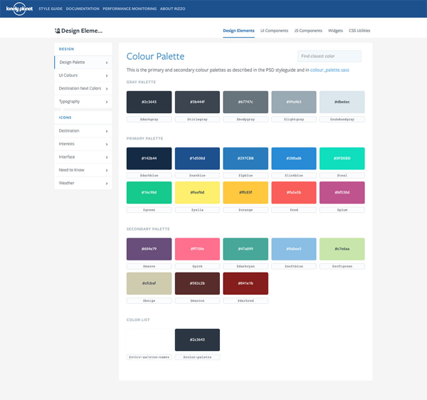

Influences
The concept of a digital style guide is not new, with some of the leading global tech companies offering influence to the Web Design Language. Google, The Lonely Planet, BBC and AIRBNB all have well established and often imitated style guides. By adopting this approach to design, the Royal Canin brand joins this group of pioneering brands in the pursuit of delivering better user experiences, and more efficient design collaboration. Below we look at some of the leading digital style guides in more detail and how they’ve offered inspiration to the Web Design Language.
Google Material Design

Adopted over a multitude of device types, Google’s Material Design aims to ‘create a visual language for our users that synthesizes the classic principles of good design with the innovation and possibility of technology and science.’ Material design has helped shape decisions made throughout the development of the Web Design Language to ensure best practice is constantly met and design styles are pushed to new levels.
See Material Design in full.
Lonely Planet Rizzo
Tasked with ensuring a consistent design & development style is adhered to across a global site Lonely Planet Rizzo adopts several key development principles that were important to ensure the Web Design Language is a success; Re-use as much as possible & keep it simple. Lonely Planet Rizzo also categorises content into style elements and UI components in a way that was deemed neccessary early on in the Web Design Language.
See Lonely Planet Rizzo in full.
BBC Gel

Similar to Material Design scale, BBC Gel must be adopted across a multitude of platforms that must retain the style of the BBC, but enable freedom across specific markets. BBC Gel aims to ‘create consistent and delightful user experiences across all of our Digital Services.’ BBC Gel has been establised over a number of years and their aim is to expand over time, something that can closely be compared to the Journey the Web Design Language aims to go on.
See BBC Gel in full.